TensorFlow for Model Optimization
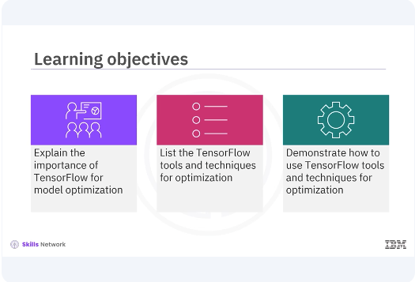
Welcome to this video on TensorFlow for Model Optimization. After watching this video, you'll be able to explain the importance of TensorFlow for optimizing deep learning models to improve efficiency in terms of speed, size, and computational requirements. List the TensorFlow tools and techniques for optimization. Demonstrate how to use TensorFlow tools and techniques for optimization.
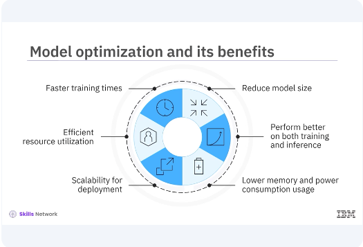
Model optimization is crucial for developing efficient and performant deep learning models. Optimized models train faster, reduce the model size, use resources more effectively, perform better on both training and inference tasks, provide scalability for deployment, use lower memory and power consumption.
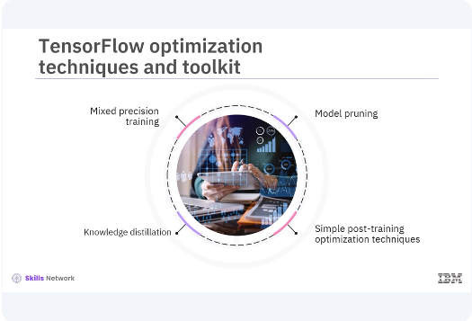
TensorFlow provides several built-in tools and techniques to help with this process. TensorFlow includes several optimization techniques such as mixed-precision training, knowledge distillation, and simple post-training optimization techniques like pruning, quantization, which are supported by the TensorFlow Model Optimization Toolkit.
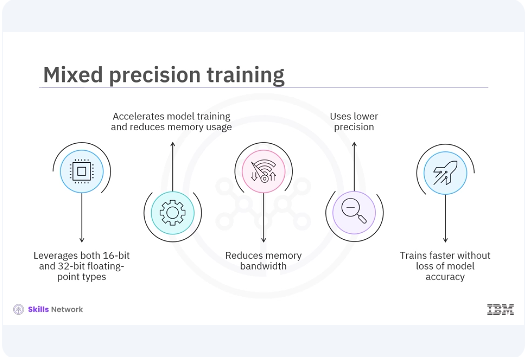
These tools help you optimize your models for both training and deployment. Mixed-precision training leverages both 16-bit and 32-bit floating-point types to accelerate model training and reduce memory usage. This technique can significantly improve performance on modern GPUs that support mixed-precision operations. It reduces memory bandwidth and uses lower precision where possible, allowing models to train faster on modern GPUs without significant loss of model accuracy.
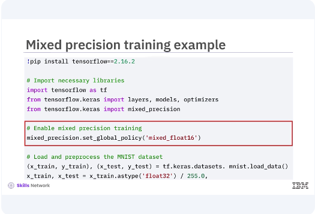
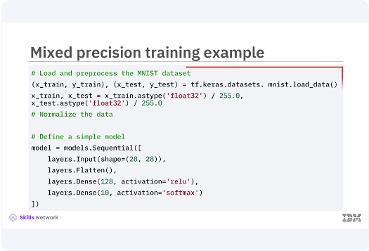
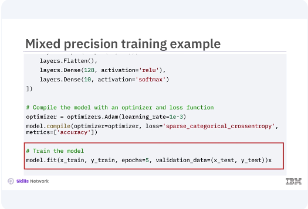
In this example, you set the global policy to Mixed Float 16 for mixed-precision in training. Then you load and preprocess the MNIST dataset and define a simple model. You then optimize the model by using an optimizer and loss function. This speeds up training by reducing the size of gradients and other immediate results while maintaining accuracy through loss scaling. This allows TensorFlow to use 16-bit floats where possible, improving performance and reducing memory usage without compromising model accuracy.
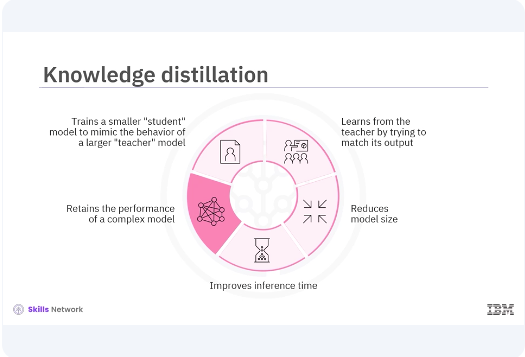
Knowledge distillation is a technique that involves training a smaller student model to mimic the behavior of a larger teacher The teacher model is typically a deep and complex neural network trained to high accuracy, and the student model is a smaller, simpler network that learns from the teacher by trying to match its output. This technique reduces the model size, making it suitable for deployment on resource-constrained devices with faster inference time while retraining the performance of a more complex model.
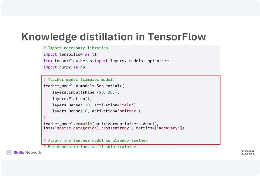
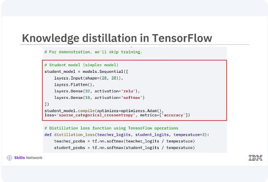
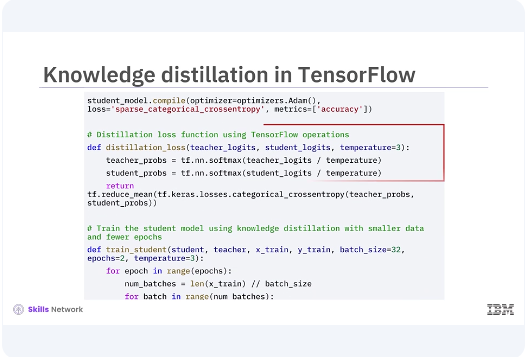
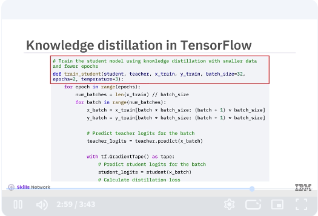
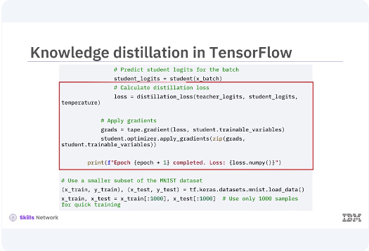
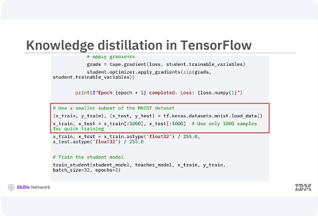
The teacher model is trained to achieve high accuracy on the training data. The student model is then trained using the outputs, logits, of the teacher model instead of the original labels. This is achieved using a softened version of the outputs, controlled by a temperature parameter in the softmax function. Train the student model using knowledge distillation with smaller data and fewer epochs. Predict teacher logits for the batch using tf.GradientTape method. Calculate distillation loss and apply gradients. Use a smaller subset of the MNIST dataset and train the student model.
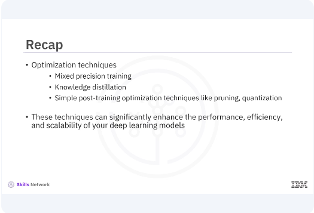
In this video, you learned, TensorFlow includes several optimization techniques such as mixed precision training, knowledge distillation, and simple post-training optimization techniques like pruning, quantization, which are supported by the TensorFlow Model Optimization Toolkit. These techniques can significantly enhance the performance, efficiency, and scalability of your deep learning models.